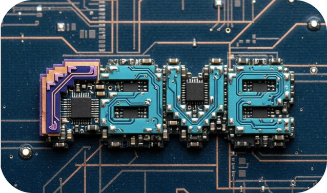
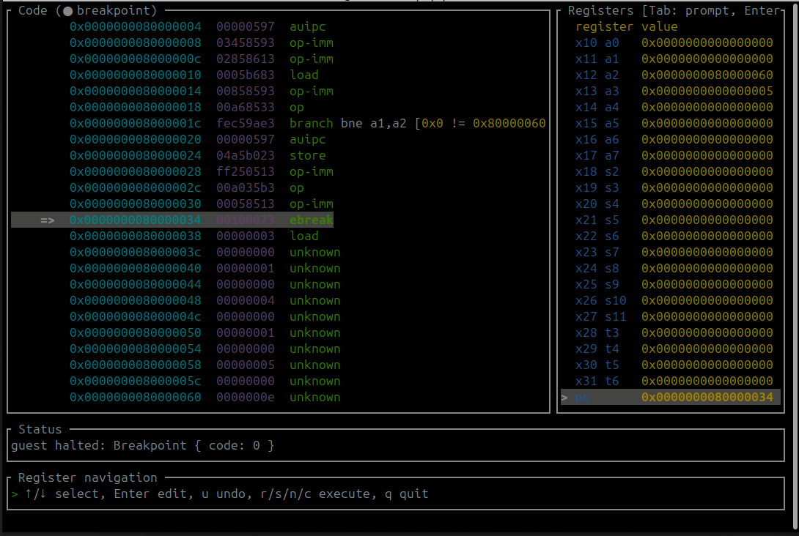
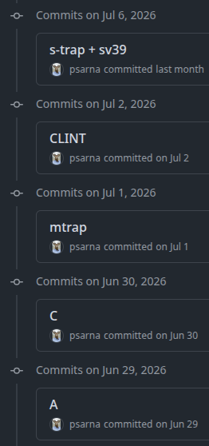

Implementing a full-fledged RISC-V emulator used to be at the top of my open-source bucket list. I got inspired after finishing the RISC-V Reader book. The book is structured as iterative documentation, because RISC-V is designed in a modular way. You start with "bare bones" RISC-V, which is a glorified calculator working on predefined registers. Then, chapter after chapter, features are added on top:
- multiply and divide,
- floating point ops,
- atomics,
- compressed instructions (think ARM Thumb),
- vector ops,
- 64bit,
- privilege levels (de facto requirement for booting an operating system)
- etc...
Is there a better design for building your own emulator step-by-step, one feature per weekend? No, there isn’t.
That’s how rave emulator started. The name is inspired by an obscure etymology story I read about the Samba file server once. Andrew Tridgell supposedly just grepped the English dictionary for words containing letters SMB in order, separated with vowels. Applying the same heuristics to RV yields only a few candidates:
grep '^r[aeiouy]*v[aeiouy]*$' /usr/share/dict/words
rave
reeve
rev
revue
rovewith rave being the obvious winner.
Why RISC-V
At the time of writing, betting on RISC-V can get you an appliance that’s maybe a bit slower than one with an ARM CPU, but at least it’s also significantly more expensive. What a bargain!
Jokes aside, RISC-V is still considered an emerging standard, and it has a few qualities that make it a good candidate for adoption. It’s open, as in you don’t need to pay trillions in licenses to print silicon compatible with it. It’s popular enough to get you a working Linux and full compiler support for most programming languages. Also, it already caught the attention of the AI industry beast, and that means there are many influential entities interested in making RISC-V devices as fast and cheap as possible. Quite a good place to be as an emerging architecture.
Why an emulator
My brain learns best when put into practice. The aforementioned intro book is very nice, but it also didn’t make me immediately proficient in the arch. Implementing an emulator in small, self-contained stages is a great way of ingesting RISC-V knowledge, bottom-up.
Feature wishlist
Since the emulator was intended to be a self-educational project, I also wanted it to maintain a set of tools to help me grasp all the intricacies of the spec. From the start, I wanted to have a pwndbg-inspired TUI that allows you to step through instructions, inspect register values,
and interact with the program through fake UART (the number one interface for all emulators, because it’s that simple to implement).

Since RISC-V is modular, one needs to decide which extensions are implemented and supported. My personal target was deceitfully simple – implement just enough of them to be able to boot the most minimized Linux image for RISC-V in 64bit addressing mode.
RISC-V’s convention of advertising supported extensions is by appending letters. E.g., an RV64IMAC is the identifier of "RISC-V 64bit with integers (I), multiply/divide (M), atomics (A), and compressed instruction set (C)." It also turned out that Linux needs quite a few of those letters, so the requirements profile got a shortened alias called RVA23. For those preferring the canonical name (I’m one of you!), it would be at least RV64IMAFDCV_Zicsr_Zicntr_Zihpm_Ziccif_Ziccrse_Ziccamoa_Zicclsm_Zic64b_Za64rs_Zihintpause_Zba_Zbb_Zbs_Zicbom_Zicbop_Zicboz_Zfhmin_Zkt_Zvfhmin_Zvbb_Zvkt_Zihintntl_Zicond_Zimop_Zcmop_Zcb_Zfa_Zawrs. Who wouldn’t love to put an implementation of that beautiful mouthful in their resume…
An extension a day keeps the doctor away

Modular design makes RISC-V a great fit for AI-enhanced coding sessions. My everyday routine was like this:- Pick another extension to implement.
- Refresh my memory on the spec with a RISC-V Reader book chapter.
- Pair-code with a large language model to get the feature delivered.
- Add support for the new thing to the TUI debugger.
- Test, automatically and manually.
Limiting the scope to a single feature per session leaves enough room for keeping the context fresh. The context window is a scarce resource in language models at the time of writing, but in the previous sentence I actually meant my human meat brain’s capacity. The way it works (tested empirically) is that I am way more likely to remember a particular aspect of something I’m learning if I only focus on a manageable portion of it. In the case of writing a RISC-V emulator, a single extension fits just right.
It boots!
As soon as a bunch of important features landed:
- hardware 39-bit addressable paging,
- software and hardware interrupts,
- switching privilege modes,
- device tree and initramfs loading in the emulator,
rave was ready to boot an operating system! The first anticlimactic system to boot inside rave was a dumb UART echo, doing nothing but sending back messages it read. Fortunately, Linux includes first-class support for RISC-V, and a few kernel compilations later I was able to boot into Linux shell, which really just worked!
It boots in your browser!
Now, the emulator core is a straightforward userspace program with hardly any syscalls. As such, it compiles just fine to Wasm! A static website could just host the machine in a web worker, and be capable of booting an operating system right there in the browser. That static website already exists today and is available at https://rave.sarna.dev. Just look at all the register values updating in real time. Adorable.
Mixture of mixture of experts
A few random conclusions on the artificial intelligence setup used while implementing rave.
One of the unofficial inspirations of starting this project was to vibe-check poolsideai’s not-yet-released-by-then Laguna S 2.1. It was orders of magnitude faster than alternatives, even though it needed to spend more steps on a particular problem than the competition. (That amounted to more tokens burned, albeit for a great cause.) Laguna S and XS are designed to be compact enough for commodity hardware, and the mixture-of-experts design makes the models fast while retaining their sharpness.
Occasionally I used the newest frontier models too, including that infamous single day window of Fable being available before its first takedown.
The final, most incompetent expert in the mix was me. Reading a paperback copy of the de facto RISC-V manual was good enough to fool me that I was still taking an active part in the development process, while learning something practical. Granted, that is not the same level of practicality that came from implementing an emulator from scratch in the pre-agentic era. I think fondly of those ancient times (a bunch of months ago at the time of writing), but it’s better to adapt to the new reality sooner than later ¯\_(ツ)_/¯.